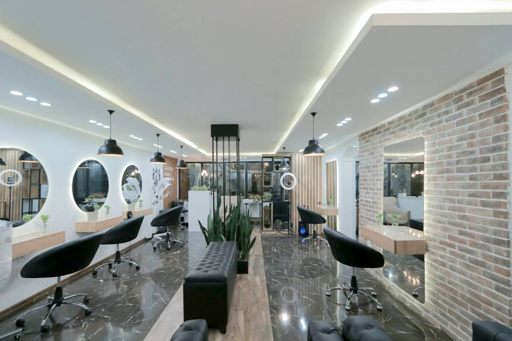

Via Viminale 8 · Città Studi · Milano
Un salone di quartiere fresco e diretto, aperto anche il lunedì pomeriggio. Prenota con una telefonata.

su 3 recensioni Google
Lunedì
aperti dalle 14:00
Tra una lezione e l'altra?
Passa da noi.
14:00 – 19:30
9:00 – 19:30
Chiuso
Servizi e prezzi su richiesta: chiamaci. Alcune immagini sono fotografie illustrative.